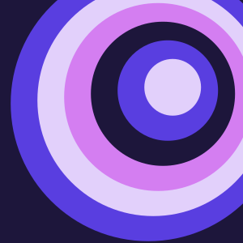
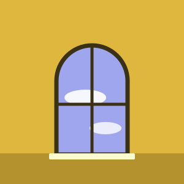

Sua música, do seu jeito
Pesquise músicas, artistas e álbuns reais do catálogo oficial do Spotify.
Explorar músicasPesquise músicas, artistas e álbuns reais do catálogo oficial do Spotify.
Explorar músicasPesquise músicas, artistas e álbuns reais do catálogo oficial do Spotify.
Explorar músicasEncontre músicas, artistas e álbuns no Spotify.
Histórico de reprodução da sua conta Spotify.
Guarde e toque músicas do seu computador ou celular neste navegador.
Os arquivos ficam neste aparelho. Limpar os dados do site apaga as cópias importadas.
Spotify
Pesquise faixas reais do catálogo Spotify por estilo musical.
Pesquise faixas de MPB no Spotify
PesquisarPesquise faixas de rock no Spotify

PesquisarPesquise faixas eletrônicas no Spotify

PesquisarPesquise faixas de jazz no Spotify
PesquisarPesquise faixas sertanejas no Spotify
PesquisarPesquise faixas de funk no Spotify